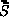

Identifiers or names can be attached to DataArray_t entities to identify and describe the quantity being stored. To facilitate communication between different application codes, we propose to establish a set of standardized data-name identifiers with fairly precise definitions. For any identifier in this set, the associated data should be unambiguously understood. In essence, this section proposes standardized terminology for labeling CFD-related data, including grid coordinates, flow solution, turbulence model quantities, nondimensional governing parameters, boundary condition quantities, and forces and moments.
We use the convention that all standardized identifiers denote scalar quantities; this is consistent with the intended use of the DataArray_t structure type to describe an array of scalars. For quantities that are vectors, such as velocity, their components are listed.
Included with the lists of standard data-name identifiers, the fundamental units of dimensions associated with that quantity are provided. The following notation is used for the fundamental units: M is mass, L is length, T is time, Θ is temperature, α is angle, and I is electric current. These fundamental units are directly associated with the elements of the DimensionalExponents_t structure. For example, a quantity that has dimensions ML/T corresponds to MassExponent = +1, LengthExponent = +1, and TimeExponent = -1.
Unless otherwise noted, all quantities in the following sections denote floating-point data types, and the appropriate DataType structure parameter for DataArray_t is real.
Coordinate systems for identifying physical location are as follows:
| System | 3-D | 2-D | ||
|---|---|---|---|---|
| Cartesian | (x,y,z) | (x,y) or (x,z) or (y,z) | ||
| Cylindrical | (r,θ,z) | (r,θ) | ||
| Spherical | (r,θ,φ) | |||
| Auxiliary | (ξ,η,ζ) | (ξ,η) or (ξ,ζ) or (η,ζ) | ||
| x-direction: ex | r-direction: er | ξ-direction: eξ | ||
| y-direction: ey | θ-direction: eθ | η-direction: eη | ||
| z-direction: ez | φ-direction: eφ | ζ-direction: eζ |
We envision that one of the "standard" coordinate systems (cartesian,
cylindrical or spherical) will be used within a zone (or perhaps the
entire database) to define grid coordinates and other related data.
The auxiliary coordinates will be used for special quantities, including
forces and moments, which may not be
defined in the same coordinate system as the rest of the data.
When auxiliary coordinates are used, a transformation must also be
provided to uniquely define them.
For example, the transform from cartesian to orthogonal auxiliary
coordinates is,

In addition, normal and tangential coordinates are often used to define boundary conditions and data related to surfaces. The normal coordinate is identified as n with the unit vector en.
The data-name identifiers defined for coordinate systems are listed in
the following table.
All represent real DataTypes, except for ElementConnectivity
and ParentData, which are integer.
| Data-Name Identifier | Description | Units | ||
|---|---|---|---|---|
| CoordinateX | x | L | ||
| CoordinateY | y | L | ||
| CoordinateZ | z | L | ||
| CoordinateR | r | L | ||
| CoordinateTheta | θ | α | ||
| CoordinatePhi | φ | α | ||
| CoordinateNormal | Coordinate in direction of en | L | ||
| CoordinateTangential | Tangential coordinate (2-D only) | L | ||
| CoordinateXi | ξ | L | ||
| CoordinateEta | η | L | ||
| CoordinateZeta | ζ | L | ||
| CoordinateTransform | Transformation matrix (T) | - | ||
| InterpolantsDonor | Interpolation factors | - | ||
| ElementConnectivity | Nodes making up an element | - | ||
| ParentData | Element parent identification | - | ||
This section describes data-name identifiers for typical Navier-Stokes solution variables. The list is obviously incomplete, but should suffice for initial implementation of the CGNS system. The variables listed in this section are dimensional or raw quantities; nondimensional parameters and coefficients based on these variables are discussed in the section Nondimensional Parameters.
We use fairly universal notation for state variables. Static quantities are measured with the fluid at speed: static density (ρ), static pressure (p), static temperature (T), static internal energy per unit mass (e), static enthalpy per unit mass (h), entropy (s), and static speed of sound (c). We also approximate the true entropy by the function sapp = p / ργ (this assumes an ideal gas). The velocity is q = uex + vey + wez, with magnitude q = (q ⋅ q)1/2. Stagnation quantities are obtained by bringing the fluid isentropically to rest; these are identified by a subscript "0". The term "total" is also used to refer to stagnation quantities.
Conservation variables are density, momentum (ρq = ρuex + ρvey + ρwez), and stagnation energy per unit volume (ρe0).
For rotating coordinate systems, u, v, and w are the x, y, and z components of the velocity vector in the inertial frame; ω is the rotation rate vector; R is a vector from the center of rotation to the point of interest; and wr = ω × R is the rotational velocity vector of the rotating frame of reference, with components wrx, wry, and wrz.
Molecular diffusion and heat transfer introduce the molecular viscosity (μ), kinematic viscosity (ν) and thermal conductivity coefficient (k). These are obtained from the state variables through auxiliary correlations. For a perfect gas, μ and k are functions of static temperature only.
The Navier-Stokes equations involve the strain tensor
() and
the shear-stress tensor
().
Using indicial notation, the
3-D cartesian components of the strain tensor are,


Reynolds averaging of the Navier-Stokes equations introduce Reynolds stresses (−ρ(u′v′)ave, etc.) and turbulent heat flux terms (−ρ(u′e′)ave, etc.), where primed quantities are instantaneous fluctuations. These quantities are obtained from auxiliary turbulence closure models. Reynolds-stress models formulate transport equations for the Reynolds stresses directly; whereas, eddy-viscosity models correlate the Reynolds stresses with the mean strain rate,
Skin friction evaluated at a surface is the dot product of the shear
stress tensor with the surface normal:
The data-name identifiers defined for flow solution quantities are listed below.
Note that for some vector quantities, like momentum, the table only
explicitly lists data-name identifiers for the x, y, and z
components, and for the magnitude.
It should be understood, however, that for any vector quantity with a
standardized data name "Vector", the following standardized data
names are also defined:
| VectorX | x-component of vector | ||
| VectorY | y-component of vector | ||
| VectorZ | z-component of vector | ||
| VectorR | Radial component of vector | ||
| VectorTheta | θ-component of vector | ||
| VectorPhi | φ-component of vector | ||
| VectorMagnitude | Magnitude of vector | ||
| VectorNormal | Normal component of vector | ||
| VectorTangential | Tangential component of vector (2-D only) |
Also note that some data-name identifiers used with multi-species flows
include the variable string Symbol, which represents either the
chemical symbol for a species, or a defined name for a mixture.
See the section describing the
ChemicalKineticsModel
data structure for examples and a
table of defined
names.
| Data-Name Identifier | Description | Units | ||
|---|---|---|---|---|
| Potential | Potential: ∇φ = q | L2/T | ||
| StreamFunction | Stream function (2-D): ∇ × ψ = q | L2/T | ||
| Density | Static density (ρ) | M/L3 | ||
| Pressure | Static pressure (p) | M/(LT2) | ||
| Temperature | Static temperature (T) | Θ | ||
| EnergyInternal | Static internal energy per unit mass (e) | L2/T2 | ||
| Enthalpy | Static enthalpy per unit mass (h) | L2/T2 | ||
| Entropy | Entropy (s) | ML2/(T2Θ) | ||
| EntropyApprox | Approximate entropy (sapp = p / ργ) | L3γ−1/(Mγ−1T2) | ||
| DensityStagnation | Stagnation density (ρ0) | M/L3 | ||
| PressureStagnation | Stagnation pressure (p0) | M/(LT2) | ||
| TemperatureStagnation | Stagnation temperature (T0) | Θ | ||
| EnergyStagnation | Stagnation energy per unit mass (e0) | L2/T2 | ||
| EnthalpyStagnation | Stagnation enthalpy per unit mass (h0) | L2/T2 | ||
| EnergyStagnationDensity | Stagnation energy per unit volume (ρe0) | M/(LT2) | ||
| VelocityX | x-component of velocity (u = q · ex) | L/T | ||
| VelocityY | y-component of velocity (v = q ⋅ ey) | L/T | ||
| VelocityZ | z-component of velocity (w = q ⋅ ez) | L/T | ||
| VelocityR | Radial velocity component (q ⋅ er) | L/T | ||
| VelocityTheta | Velocity component in θ direction (q ⋅ eθ) | L/T | ||
| VelocityPhi | Velocity component in φ direction (q ⋅ eφ) | L/T | ||
| VelocityMagnitude | Velocity magnitude (q = (q ⋅ q)1/2) | L/T | ||
| VelocityNormal | Normal velocity component (q ⋅ n) | L/T | ||
| VelocityTangential | Tangential velocity component (2-D) | L/T | ||
| VelocitySound | Static speed of sound | L/T | ||
| VelocitySoundStagnation | Stagnation speed of sound | L/T | ||
| MomentumX | x-component of momentum (ρu) | M/(L2T) | ||
| MomentumY | y-component of momentum (ρv) | M/(L2T) | ||
| MomentumZ | z-component of momentum (ρw) | M/(L2T) | ||
| MomentumMagnitude | Magnitude of momentum (ρq) | M/(L2T) | ||
| RotatingVelocityX | x-component of velocity, relative to rotating frame (urx = u − wrx) | L/T | ||
| RotatingVelocityY | y-component of velocity, relative to rotating frame (ury = v − wry) | L/T | ||
| RotatingVelocityZ | z-component of velocity, relative to rotating frame (urz = w − wrz) | L/T | ||
| RotatingMomentumX | x-component of momentum, relative to rotating frame (ρurx) | M/(L2T) | ||
| RotatingMomentumY | y-component of momentum, relative to rotating frame (ρury) | M/(L2T) | ||
| RotatingMomentumZ | z-component of momentum, relative to rotating frame (ρurz) | M/(L2T) | ||
| RotatingVelocityMagnitude | Velocity magnitude in rotating frame (qr = (urx + ury + urz)1/2) | L/T | ||
| RotatingPressureStagnation | Stagnation pressure in rotating frame | M/(LT2) | ||
| RotatingEnergyStagnation | Stagnation energy per unit mass in rotating frame ((e0)r) | L2/T2 | ||
| RotatingEnergyStagnationDensity | Stagnation energy per unit volume in rotating frame (ρ(e0)r) | M/(LT2) | ||
| RotatingEnthalpyStagnation | Stagnation enthalpy per unit mass in rotating frame, rothalpy | L2/T2 | ||
| EnergyKinetic | (u2 + v2 + w2)/2 = q2/2 | L2/T2 | ||
| PressureDynamic | ρq2/2 | M/(LT2) | ||
| SoundIntensityDB | Sound intensity level in decibels, 10 log10(I/Iref) = 20 log10(p/pref), where I is the sound power per unit area, Iref = 10−12 watts/m2 is the reference sound power per unit area, p is the pressure wave amplitude, and pref = 2×10−5 N/m2 is the reference pressure. | - | ||
| SoundIntensity | Sound intensity (i.e., sound power per unit area, I) | M/T3 | ||
| VorticityX | ωx = ∂w/∂y − ∂v/∂z = ω ⋅ ex | T−1 | ||
| VorticityY | ωy = ∂u/∂z − ∂w/∂x = ω ⋅ ey | T−1 | ||
| VorticityZ | ωz = ∂v/∂x − ∂u/∂y = ω ⋅ ez | T−1 | ||
| VorticityMagnitude | ω = (ω × ω)1/2 | T−1 | ||
| SkinFrictionX | x-component of skin friction (τ ⋅ ex) | M/(LT2) | ||
| SkinFrictionY | y-component of skin friction (τ ⋅ ey) | M/(LT2) | ||
| SkinFrictionZ | z-component of skin friction (τ ⋅ ez) | M/(LT2) | ||
| SkinFrictionMagnitude | Skin friction magnitude ((τ × τ)1/2) | M/(LT2) | ||
| VelocityAngleX | Velocity angle (arccos(u/q) ∈ [0,180°]) | α | ||
| VelocityAngleY | arccos(v/q) | α | ||
| VelocityAngleZ | arccos(w/q) | α | ||
| VelocityUnitVectorX | x-component of velocity unit vector (q ⋅ ex / q) | - | ||
| VelocityUnitVectorY | y-component of velocity unit vector (q ⋅ ey / q) | - | ||
| VelocityUnitVectorZ | z-component of velocity unit vector (q ⋅ ez / q) | - | ||
| MassFlow | Mass flow normal to a plane (&rhoq ⋅ n) | M/(L2T) | ||
| ViscosityKinematic | Kinematic viscosity (ν = μ/ρ) | L2/T | ||
| ViscosityMolecular | Molecular viscosity (μ) | M/(LT) | ||
| ViscosityEddyKinematic | Kinematic eddy viscosity (νt) | L2/T | ||
| ViscosityEddy | Eddy viscosity (μt) | M/(LT) | ||
| ThermalConductivity | Thermal conductivity coefficient (k) | ML/(T3Θ) | ||
| PowerLawExponent | Power-law exponent (n) in molecular viscosity or thermal conductivity model | - | ||
| SutherlandLawConstant | Sutherland's Law constant (Ts) in molecular viscosity or thermal conductivity model | Θ | ||
| TemperatureReference | Reference temperature (Tref) in molecular viscosity or thermal conductivity model | Θ | ||
| ViscosityMolecularReference | Reference viscosity (μref) in molecular viscosity model | M/(LT) | ||
| ThermalConductivityReference | Reference thermal conductivity (kref) in thermal conductivity model | ML/(T3Θ) | ||
| IdealGasConstant | Ideal gas constant (R = cp − cv) | L2/(T2Θ) | ||
| SpecificHeatPressure | Specific heat at constant pressure (cp) | L2/(T2Θ) | ||
| SpecificHeatVolume | Specific heat at constant volume (cv) | L2/(T2Θ) | ||
| ReynoldsStressXX | Reynolds stress −ρ(u′u′)ave | M/(LT2) | ||
| ReynoldsStressXY | Reynolds stress −ρ(u′v′)ave | M/(LT2) | ||
| ReynoldsStressXZ | Reynolds stress −ρ(u′w′)ave | M/(LT2) | ||
| ReynoldsStressYY | Reynolds stress −ρ(v′v′)ave | M/(LT2) | ||
| ReynoldsStressYZ | Reynolds stress −ρ(v′w′)ave | M/(LT2) | ||
| ReynoldsStressZZ | Reynolds stress −ρ(w′w′)ave | M/(LT2) | ||
| MolecularWeightSymbol | Molecular weight for species Symbol | - | ||
| HeatOfFormationSymbol | Heat of formation per unit mass for species Symbol | L2/T2 | ||
| FuelAirRatio | Fuel/air mass ratio | - | ||
| ReferenceTemperatureHOF | Reference temperature for the heat of formation | Θ | ||
| MassFractionSymbol | Mass of species Symbol, divided by total mass | - | ||
| LaminarViscositySymbol | Laminar viscosity of species Symbol | M/(LT) | ||
| ThermalConductivitySymbol | Thermal conductivity of species Symbol | ML/(T3Θ) | ||
| EnthalpyEnergyRatio | The ratio β = h / e = ∫TTref cp dT / ∫TTref cv dT for the mixture | - | ||
| CompressibilityFactor | The gas constant of the mixture divided by the freestream gas constant, Z = R / R∞ | - | ||
| VibrationalElectronEnergy | Vibrational-electronic excitation energy per unit mass | L2/T2 | ||
| HeatOfFormation | Heat of formation per unit mass for the entire mixture, H = ∑ni=1 Yi Hi, where n is the number of species, Yi is the mass fraction of species i, and Hi is the heat of formation for species i at the reference temperature ReferenceTemperatureHOF. This requires that ReferenceTemperatureHOF be specified using the ChemicalKineticsModel data structure. | L2/T2 | ||
| VibrationalElectronTemperature | Vibrational electron temperature | Θ | ||
| SpeciesDensitySymbol | Density of species Symbol | M/L3 | ||
| MoleFractionSymbol | Number of moles of species Symbol divided by the total number of moles for all species | - | ||
| Voltage | Voltage | ML2/TI | ||
| ElectricFieldX | x-component of electric field vector | ML/TI | ||
| ElectricFieldY | y-component of electric field vector | ML/TI | ||
| ElectricFieldZ | z-component of electric field vector | ML/TI | ||
| MagneticFieldX | x-component of magnetic field vector | I/L | ||
| MagneticFieldY | y-component of magnetic field vector | I/L | ||
| MagneticFieldZ | z-component of magnetic field vector | I/L | ||
| CurrentDensityX | x-component of current density vector | I/L2 | ||
| CurrentDensityY | y-component of current density vector | I/L2 | ||
| CurrentDensityZ | z-component of current density vector | I/L2 | ||
| ElectricConductivity | Electrical conductivity | ML/T3I2 | ||
| LorentzForceX | x-component of Lorentz force vector | ML/T2 | ||
| LorentzForceY | y-component of Lorentz force vector | ML/T2 | ||
| LorentzForceZ | z-component of Lorentz force vector | ML/T2 | ||
| JouleHeating | Joule heating | ML2/T2 | ||
| LengthReference | Reference length L | L | ||
This section lists data-name identifiers for typical Reynolds-averaged
Navier-Stokes turbulence model variables.
Turbulence model solution quantities and model constants present a
particularly difficult nomenclature problem - to be precise we need to
identify both the variable and the model (and version) that it comes
from.
The list in the following table falls short in this respect.
| Data-Name Identifier | Description | Units | ||
|---|---|---|---|---|
| TurbulentDistance | Distance to nearest wall | L | ||
| TurbulentEnergyKinetic | k = [(u′u′)ave + (v′v′)ave + (w′w′)ave] / 2 | L2/T2 | ||
| TurbulentDissipation | ε | L2/T3 | ||
| TurbulentDissipationRate | ε/k = ω | T−1 | ||
| TurbulentBBReynolds | Baldwin-Barth one-equation model RT | - | ||
| TurbulentSANuTilde | Spalart-Allmaras one-equation model νSA | L2/T | ||
CFD codes are rich in nondimensional governing parameters, such as Mach number and Reynolds number, and nondimensional flowfield coefficients, such as pressure coefficient. The problem with these parameters is that their definitions and conditions that they are evaluated at can vary from code to code. Reynolds number is particularly notorious in this respect.
These parameters have posed us with a difficult dilemma. Either we impose a rigid definition for each and force all database users to abide by it, or we develop some methodology for describing the particular definition that the user is employing. The first limits applicability and flexibility, and the second adds complexity. We have opted for the second approach, but we include only enough information about the definition of each parameter to allow for conversion operations. For example, the Reynolds number includes velocity, length, and kinematic viscosity scales in its definition (i.e., Re = VLR/ν. The database description of Reynolds number includes these different scales. By providing these "definition components", any code that reads Reynolds number from the database can transform its value to an appropriate internal definition. These definition components are identified by appending a "_" to the data-name identifier of the parameter.
Definitions for nondimensional flowfield coefficients follow: the pressure coefficient is defined as,
The data-name identifiers defined for nondimensional governing
parameters and flowfield coefficients are listed in the following table.
| Data-Name Identifier | Description | Units | ||
|---|---|---|---|---|
| Mach | Mach number: M = q/c | - | ||
| Mach_Velocity | Velocity scale (q) | L/T | ||
| Mach_VelocitySound | Speed of sound scale (c) | L/T | ||
| RotatingMach | Mach number relative to rotating frame: Mr = qr/c | - | ||
| Reynolds | Reynolds number: Re = VLR/ν | - | ||
| Reynolds_Velocity | Velocity scale (V) | L/T | ||
| Reynolds_Length | Length scale (LR) | L | ||
| Reynolds_ViscosityKinematic | Kinematic viscosity scale (ν) | L2/T | ||
| Prandtl | Prandtl number: Pr = μcp/k | - | ||
| Prandtl_ThermalConductivity | Thermal conductivity scale (k) | ML/(T3Θ) | ||
| Prandtl_ViscosityMolecular | Molecular viscosity scale (μ) | M/(LT) | ||
| Prandtl_SpecificHeatPressure | Specific heat scale (cp) | L2/(T2Θ) | ||
| PrandtlTurbulent | Turbulent Prandtl number, ρνtcp/kt | - | ||
| SpecificHeatRatio | Specific heat ratio: γ = cp/cv | - | ||
| SpecificHeatRatio_Pressure | Specific heat at constant pressure (cp) | L2/(T2Θ) | ||
| SpecificHeatRatio_Volume | Specific heat at constant volume (cv) | L2/(T2Θ) | ||
| CoefPressure | cp | - | ||
| CoefSkinFrictionX | cf ⋅ ex | - | ||
| CoefSkinFrictionY | cf ⋅ ey | - | ||
| CoefSkinFrictionZ | cf ⋅ ez | - | ||
| Coef_PressureDynamic | ρrefq2ref / 2 | M/(LT2) | ||
| Coef_PressureReference | pref | M/(LT2) | ||
Boundary condition specification for inflow/outflow or farfield boundaries often involves Riemann invariants or characteristics of the linearized inviscid flow equations. For an ideal compressible gas, these are typically defined as follows: Riemann invariants for an isentropic 1-D flow are,
| Characteristic | Λn | W'n | ||
|---|---|---|---|---|
| Entropy | u | p′ − ρ′/c2 | ||
| Vorticity | u | v′ | ||
| Vorticity | u | w′ | ||
| Acoustic | u ± c | p′ ± u′/ρc | ||
| Data-Name Identifier | Description | Units | ||
|---|---|---|---|---|
| RiemannInvariantPlus | u + 2c / (γ − 1) | L/T | ||
| RiemannInvariantMinus | u − 2c / (γ − 1) | L/T | ||
| CharacteristicEntropy | p′ − ρ′/c2 | M/(LT2) | ||
| CharacteristicVorticity1 | v′ | L/T | ||
| CharacteristicVorticity2 | w′ | L/T | ||
| CharacteristicAcousticPlus | p′ + u′/ρc | M/(LT2) | ||
| CharacteristicAcousticMinus | p′ − u′/ρc | M/(LT2) | ||
Conventions for data-name identifiers for forces and moments are defined in this section. Ideally, forces and moments should be attached to geometric components or less ideally to surface grids. Currently, the standard mechanism for storing forces and moments is generally through the ConvergenceHistory_t node, either attached to the entire configuration (under CGNSBase_t) or attached to a zone (under Zone_t).
Given a differential force f (i.e., a force per unit area), the force integrated over a surface is,
Lift, drag and moment are often computed in auxiliary coordinate frames
(e.g., wind axes or stability axes).
We introduce the convention that
lift, drag and moment are computed in the
(ξ,
η,
ζ)
coordinate system.
Positive drag is assumed parallel to the
ξ-direction (i.e.,
D = eξ);
and positive lift is assumed parallel to the
η-direction (i.e.,
L = eη).
Thus, forces and moments defined in this auxiliary coordinate system are,
Lift, drag and moment coefficients in 3-D are defined as,
The data-name identifiers and definitions provided for forces
and moments and their associated coefficients are listed in
the table below.
For coefficients, the dynamic pressure and length scales used in the
normalization are provided.
| Data-Name Identifier | Description | Units | ||
|---|---|---|---|---|
| ForceX | Fx = F ⋅ ex | ML/T2 | ||
| ForceY | Fy = F ⋅ ey | ML/T2 | ||
| ForceZ | Fz = F ⋅ ez | ML/T2 | ||
| ForceR | Fr = F ⋅ er | ML/T2 | ||
| ForceTheta | Fθ = F ⋅ eθ | ML/T2 | ||
| ForcePhi | Fφ = F ⋅ eφ | ML/T2 | ||
| Lift | L or L' | ML/T2 | ||
| Drag | D or D' | ML/T2 | ||
| MomentX | Mx = M ⋅ ex | ML2/T2 | ||
| MomentY | My = M ⋅ ey | ML2/T2 | ||
| MomentZ | Mz = M ⋅ ez | ML2/T2 | ||
| MomentR | Mr = M ⋅ er | ML2/T2 | ||
| MomentTheta | Mθ = M ⋅ eθ | ML2/T2 | ||
| MomentPhi | Mφ = M ⋅ eφ | ML2/T2 | ||
| MomentXi | Mξ = M ⋅ eξ | ML2/T2 | ||
| MomentEta | Mη = M ⋅ eη | ML2/T2 | ||
| MomentZeta | Mζ = r ⋅ eζ | ML2/T2 | ||
| Moment_CenterX | x0 = r0 ⋅ ex | L | ||
| Moment_CenterY | y0 = r0 ⋅ ey | L | ||
| Moment_CenterZ | z0 = r0 ⋅ ez | L | ||
| CoefLift | CL or cl | - | ||
| CoefDrag | CD or cd | - | ||
| CoefMomentX | CM ⋅ ex or cm ⋅ ex | - | ||
| CoefMomentY | CM ⋅ ey or cm ⋅ ey | - | ||
| CoefMomentZ | CM ⋅ ez or cm ⋅ ez | - | ||
| CoefMomentR | CM ⋅ er or cm ⋅ er | - | ||
| CoefMomentTheta | CM ⋅ eθ or cm ⋅ eθ | - | ||
| CoefMomentPhi | CM ⋅ eφ or cm ⋅ eφ | - | ||
| CoefMomentXi | CM ⋅ eξ or cm ⋅ eξ | - | ||
| CoefMomentEta | CM ⋅ eη or cm ⋅ eη | - | ||
| CoefMomentZeta | CM ⋅ eζ or cm ⋅ eζ | - | ||
| Coef_PressureDynamic | ρrefq2ref / 2 | M/(LT2) | ||
| Coef_Area | Sref | L2 | ||
| Coef_Length | cref | L | ||
Data-name identifiers related to time-dependent flow include those
associated with the storage of grid coordinates and flow solutions
as a function of time level or iteration.
Also included are identifiers for storing information defining
both rigid and arbitrary (i.e., deforming) grid motion.
| Data-Name Identifier | Data Type | Description | Units | |||
|---|---|---|---|---|---|---|
| TimeValues | real | Time values | T | |||
| IterationValues | int | Iteration values | - | |||
| NumberOfZones | int | Number of zones used for each recorded step | - | |||
| NumberOfFamilies | int | Number of families used for each recorded step | - | |||
| ZonePointers | char | Names of zones used for each recorded step | - | |||
| FamilyPointers | char | Names of families used for each recorded step | - | |||
| RigidGridMotionPointers | char | Names of RigidGridMotion structures used for each recorded step for a zone | - | |||
| ArbitraryGridMotionPointers | char | Names of ArbitraryGridMotion structures used for each recorded step for a zone | - | |||
| GridCoordinatesPointers | char | Names of GridCoordinates structures used for each recorded step for a zone | - | |||
| FlowSolutionPointers | char | Names of FlowSolution structures used for each recorded step for a zone | - | |||
| OriginLocation | real | Physical coordinates of the origin before and after a rigid grid motion | L | |||
| RigidRotationAngle | real | Rotation angles about each axis of the translated coordinate system for rigid grid motion | α | |||
| RigidVelocity | real | Grid velocity vector of the origin translation for rigid grid motion | L/T | |||
| RigidRotationRate | real | Rotation rate vector about the axis of the translated coordinate system for rigid grid motion | α/T | |||
| GridVelocityX | real | x-component of grid velocity | L/T | |||
| GridVelocityY | real | y-component of grid velocity | L/T | |||
| GridVelocityZ | real | z-component of grid velocity | L/T | |||
| GridVelocityR | real | r-component of grid velocity | L/T | |||
| GridVelocityTheta | real | θ-component of grid velocity | α/T | |||
| GridVelocityPhi | real | φ-component of grid velocity | α/T | |||
| GridVelocityXi | real | ξ-component of grid velocity | L/T | |||
| GridVelocityEta | real | η-component of grid velocity | L/T | |||
| GridVelocityZeta | real | ζ-component of grid velocity | L/T | |||